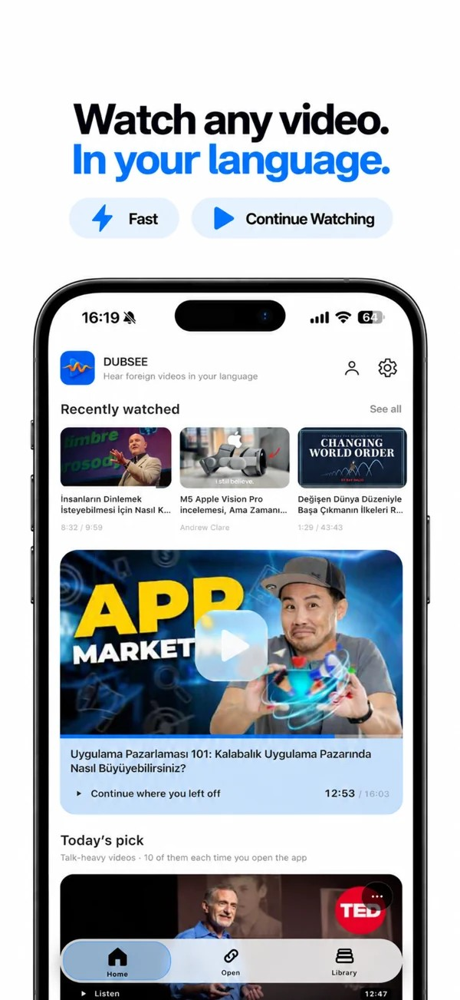
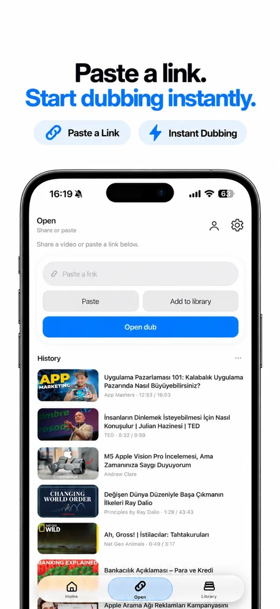
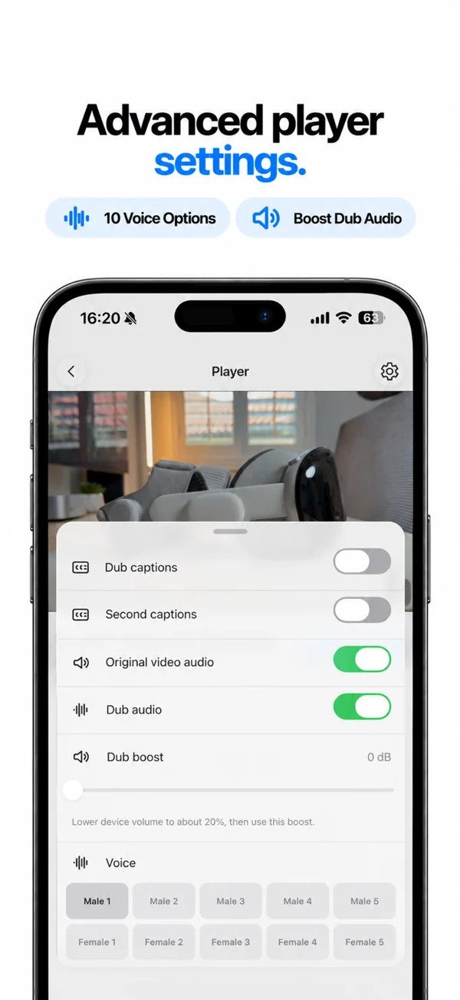
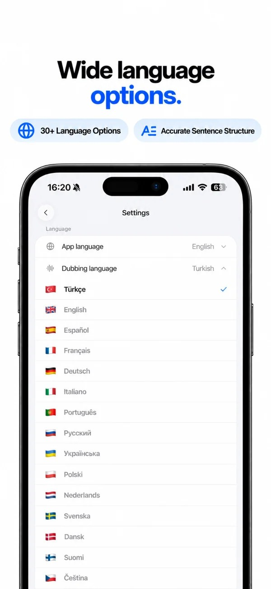

01 / Teadmised käeulatuses.
Teadmised käeulatuses.
Jälgi loengut oma keeles ja keskendu ideedele.
DUBSEE tõlgib toetatud YouTube’i videote kõne ja esitab selle tehisintellekti dubleeringuna sinu valitud keeles.

YouTube · Eesti
Tõlgi toetatud YouTube’i lingid ja kuula AI-dubleeringut eesti keeles iPhone’is. Shorts ja otseülekanded ei ole toetatud.
DUBSEE on iPhone’i rakendus, mis tõlgib toetatud YouTube’i videote kõne ja esitab selle tehisintellekti dubleeringuna valitud keeles. Kleebi link, vali keel ja kuula iPhone’is. Tavalised subtiitritega videod võivad töötada; Shorts ja otseülekanded mitte. Saadavus sõltub videost, subtiitritest, keelest ja piirkonnast. Tasuta on 1 video päevas ja kuni 2 lisaks pärast premeeritud reklaame, umbes 18-minutise piiranguga. DubSee Pro eemaldab selle piirangu ja reklaamid ning lisab piiramatud videod, 10 häält ja esituse lukustatud ekraaniga. DUBSEE on sõltumatu ega ole seotud YouTube’i ega Google’iga.
DUBSEE / 01
Kopeeri tavaline YouTube’i link, millel on subtiitrid. Shortse ja otseülekandeid ei toetata.
Kleebi link DUBSEEsse ja vali keel, mida soovid kuulata.
Esita video iPhone’is ja kuula tõlgitud AI-dubleeringut.
DUBSEE / 02
01 / Teadmised käeulatuses.
Jälgi loengut oma keeles ja keskendu ideedele.
02 / Vaata. Kuula. Loo.
Kuula puutööjuhendit oma keeles töötamise ajal.
DUBSEE / 03
DubSee Proga võib dubleering jätkuda taustal, ka siis, kui ekraan on lukus.
Reguleeri võimendust, et kuulda tõlgitud häält paremini.
Salvesta videolingid kogusse ja tule hiljem tagasi.
Tasuta kasutus sisaldab 1 videot päevas ja kuni 2 lisavideot pärast premeeritud reklaame, umbes 18-minutise piiranguga tasuta video kohta. DubSee Pro avab piiramatud videod, eemaldab selle ajapiirangu ja reklaamid, lisab 10 häält ning võimaldab taustal kuulamist ka lukustatud ekraaniga. Prooviperiood ilmub ainult siis, kui App Store kinnitab õiguse. Hind kuvatakse rakenduses enne ostu ja võib piirkonniti erineda.
DUBSEE / 04



DUBSEE on iPhone’i rakendus, mis tõlgib toetatud YouTube’i videote kõne ja esitab selle tehisintellekti dubleeringuna valitud keeles. Kleebi link, vali keel ja kuula iPhone’is. Tavalised subtiitritega videod võivad töötada; Shorts ja otseülekanded mitte. Saadavus sõltub videost, subtiitritest, keelest ja piirkonnast. Tasuta on 1 video päevas ja kuni 2 lisaks pärast premeeritud reklaame, umbes 18-minutise piiranguga. DubSee Pro eemaldab selle piirangu ja reklaamid ning lisab piiramatud videod, 10 häält ja esituse lukustatud ekraaniga. DUBSEE on sõltumatu ega ole seotud YouTube’i ega Google’iga.
Kopeeri tavaline subtiitritega YouTube’i link, kleebi see DUBSEEsse, vali eesti keel või muu keel ja vajuta esita. Shortse ja otseülekandeid ei toetata. Saadavus sõltub videost, subtiitritest, keelest ja piirkonnast.
DUBSEE toetab tavalisi YouTube’i videoid saadaolevate subtiitritega. Shortse ja otseülekandeid ei toetata. Saadavus sõltub videost, subtiitritest, keelest ja piirkonnast.
Tasuta kasutus sisaldab 1 videot päevas ja kuni 2 lisavideot pärast premeeritud reklaame, umbes 18-minutise piiranguga tasuta video kohta. DubSee Pro avab piiramatud videod, eemaldab selle ajapiirangu ja reklaamid, lisab 10 häält ning võimaldab taustal kuulamist ka lukustatud ekraaniga. Prooviperiood ilmub ainult siis, kui App Store kinnitab õiguse. Hind kuvatakse rakenduses enne ostu ja võib piirkonniti erineda.
Jah, kui video on toetatud. Vali DUBSEEs eesti keel ja kõne tõlgitakse ning esitatakse AI-dubleeringuna. Võid valida ka muu sihtkeele. Tavalised subtiitritega videod võivad töötada; Shorts ja otseülekanded mitte.
Jah. DUBSEE saab toetatud videoid dubleerida 31 keeles, sealhulgas eesti, inglise, türgi, saksa, prantsuse, hispaania, jaapani, korea, araabia ja hindi keeles. Selle lehe keelemenüü loetleb need. See ei luba, et iga video on igas keeles saadaval.
DUBSEE tõlgib toetatud YouTube’i video kõne valitud keelde ja esitab AI-hääle, kui video iPhone’is mängib. Keeled on juba rakenduses, nii et esimene käivitus ei oota allalaadimist. Saad lülituda originaalheli ja dubleeringu vahel. See ei tööta võrguühenduseta ega kata kõiki videoid.
Jah. DUBSEE on App Store’is iPhone’ile, kategoorias Foto ja video. Apple’i kirje hõlmab ka iPadi. Allalaadimine on tasuta. DubSee Pro on valikuline kuu- või aastatellimus ning hind kuvatakse rakenduses enne ostu.
Laadi DUBSEE App Store’ist alla ja ava see. Kontot ei ole vaja. Seejärel kopeeri toetatud YouTube’i link, kleebi see, vali keel ja vajuta esita. Kui dubleeringut ei tule, proovi teist videot ja kontrolli keelt sätetes.
Kopeeri tavaline YouTube’i link, millel on subtiitrid. Shortse ja otseülekandeid ei toetata. Kleebi link DUBSEEsse ja vali keel, mida soovid kuulata. Esita video iPhone’is ja kuula tõlgitud AI-dubleeringut.